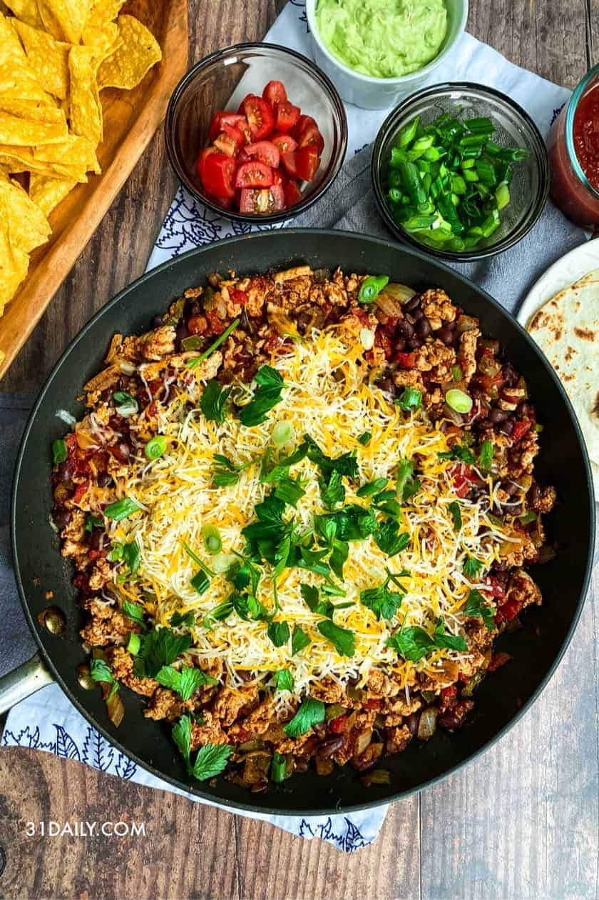

Easy Taco Skillet

Easy taco skillet bake that uses only one pan. This recipe can be made for under $10!
Ingredients
- 1 pound ground beef
- 1 onion,chopped
- 1(14.5 ounce) cand diced tomtoes
- 2 cups water
- 1 cup converted rice
- 1(1 ounce) packaged taco seasoning
- 1 cup shredded Mexican cheese blend
- 1 cup shredded lettuce
- Step 1
- Heat a large skillet over medium heat; cook and stir beef and onion until beef is browned, about 5 minutes. Drain. Stir tomatoes, water, rice, and taco seasoning into beef mixture and bring to a boil. Reduce heat to medium-low, cover, and simmer until rice is tender, about 25 minutes. Top with Mexican cheese blend and lettuce before serving.